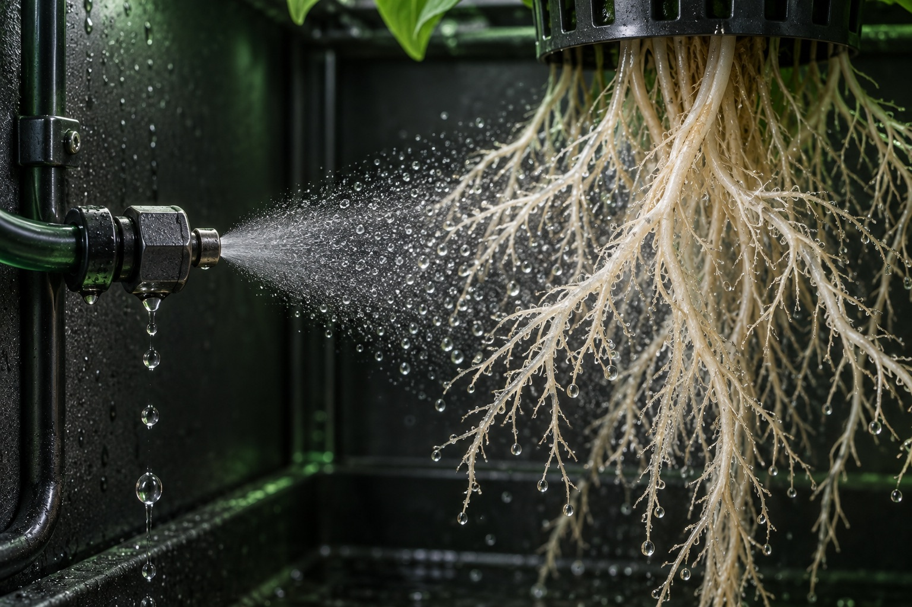

03 / Control & learning
Why aeroponic systems are difficult to manage, and where ML could help
An aeroponic system must coordinate physical nutrient delivery, root-zone conditions, solution chemistry and dependable sensing. The most useful control signal is evidence that the intended action happened. ML could help compare repeated growing trials, while basic irrigation and protective limits remain deterministic.

A pump command is not proof of irrigation
A controller can switch a relay and record success while a blocked filter, damaged line or nozzle prevents the intended delivery. Software state and physical plant exposure are different things. A sensible engineering design observes the delivery path as well as the command.
For example, an operator might compare the commanded pump state with pressure, flow and a physical spray inspection. None of those observations alone proves that every root is being wetted uniformly. Together, they give a better basis for identifying a failure and deciding what to check next.
The International Potato Center’s manual identifies power dependence and the risk of prolonged interruptions as constraints in aeroponic seed potato production. The relevant general lesson is to plan recovery before relying on automation, while keeping the crop-specific context of the manual in mind. CIP technical manual.
Timing, pressure and coverage belong to the same problem
A misting schedule cannot be evaluated independently of the spray apparatus. In controlled lettuce research, atomizer choice and spraying interval changed growth and nutrient uptake. Tunio et al., 2021.
A separate fluid-dynamics preprint measured spray geometry and droplet behavior at different inlet pressures. It is useful physical research, not proof of commercial crop performance. Narasegowda and Kumar, 2022 preprint.
As an engineering implication, record nozzle identity, pressure settings, pulse duration and observed delivery alongside plant responses. A label such as “irrigation increased” is too vague to reproduce an experiment. Root development and equipment changes should also be recorded because yesterday’s distribution may not describe today’s chamber.

An educational close-up of spray reaching roots. The illustration does not specify a nozzle pressure, droplet size or universal irrigation interval.
AI-generated concept illustrationEC and pH answer different questions
Electrical conductivity (EC) is a useful indication of dissolved ions, but it does not identify the concentration of every nutrient. An acceptable EC reading can coexist with an imbalanced solution. The University of Missouri’s guidance stresses water analysis and this limitation of EC. Hydroponic Nutrient Solutions.
pH influences nutrient availability. Oklahoma State University’s guide explains why pH, salt concentration, alkalinity and nutrient ratios matter, and describes probe calibration and allowing readings to stabilize. Dunn and Singh, 2017.
For a learning system, keep source-water information, additions, reservoir volume, measurement units and probe calibration records together. If the measurement process changes, the model may otherwise mistake a sensor change for a crop response. Recipe and laboratory information can provide context that a single conductivity value cannot.
Treat sensing as a maintained process
A useful observation has more than a number. It has a time, location, unit, sensor identity and a reason to believe it is valid. A missing sample should remain missing; silently replacing it with zero creates a different statement about the system.
A practical engineering record can distinguish measured values, estimates and operator observations. It can also record an intervention such as cleaning a probe or moving a camera. This makes the later question “What changed?” answerable.
Local control should be able to continue a defined, conservative operating mode when an internet connection fails. Remote dashboards and models can assist an operator, but making essential irrigation wait for a cloud response introduces another dependency. The exact fallback needs to be designed and tested for the installation.
A proposed ML loop learns from repeated growing cycles
The Leafcoin calibration concept concerns repeated iterations, not a model that knows the correct recipe in advance. Its proposed starting point is a consistent record of conditions, irrigation, solution changes, plant observations and outcomes.
One possible experiment would hold a baseline treatment and compare a bounded change in irrigation or nutrient composition. Repeating the trial would help distinguish a useful response from an unusual cycle. This is a proposed research design, not a report of completed Leafcoin trials.
- Define the crop, baseline treatment, outcome measures and acceptable operating bounds.
- Collect consistent measurements and document maintenance and operator interventions.
- Compare a controlled change with the baseline, using repetition and comparable conditions.
- Train or evaluate a model on completed trials, with separate evaluation data.
- Review suggested adjustments with an operator and test them within defined limits.
Explained visually
Learn from repeated growing trials
A proposed research loop. Model suggestions would be reviewed and tested within defined bounds; protective control remains deterministic.
Read the diagram as text
Define a crop and baseline, observe consistent measurements, compare repeated controlled trials, evaluate a model using separate data, and have an operator review a bounded adjustment before testing again. This describes proposed Leafcoin research, not a deployed optimization system.
- Define a baseline: Crop, outcomes and operating bounds.
- Observe consistently: Measurements plus maintenance records.
- Compare trials: Controlled changes across repeated cycles.
- Evaluate a model: Separate evaluation data and a simple baseline.
- Operator review: Bound the adjustment and test the next cycle.
Repeat comparable trials. Protective control stays local and deterministic.

Keep learning separate from protective control
Before trusting a prediction, ask whether it improves on a simple baseline and whether it works on a later cycle. Multiple records from the same growing cycle are related observations; splitting them indiscriminately between training and testing can produce an overly optimistic evaluation.
A model suggestion can be bounded by deterministic checks, maximum permitted changes and an operator decision. It should carry the context in which it was produced, rather than appearing as an unexplained instruction.
The educational point is that useful ML begins with reproducible experiments and trustworthy measurements. Leafcoin’s ML calibration section describes a proposed direction. The historical controller and sensor repositories document earlier personal lab work; they do not establish a deployed ML controller or a proven optimization result.
Common questions
Can EC prove that a nutrient solution is balanced?
No. EC indicates aggregate electrical conductivity. Individual nutrient concentrations can be inappropriate even when EC appears acceptable.
Can ML replace basic irrigation control?
That is not the proposed approach here. Protective limits and essential delivery should have defined deterministic behavior; ML could assist reviewed decisions based on trials.
Does Leafcoin already run this ML optimization loop?
This site describes it as proposed research. Historical lab materials provide prototype context, but do not establish a deployed ML optimization system.
Sources and scope
These are original research publications or institutional technical guidance. Experimental findings apply to the crop and conditions studied. Suggestions in this guide are an engineering synthesis; they are not presented as measured Leafcoin results.
- Manual on quality seed potato production using aeroponics
Víctor Otazú, International Potato Center, 2010. Institutional technical manual; potato-specific guidance.
- Influence of Atomization Nozzles and Spraying Intervals on Growth, Biomass Yield, and Nutrient Uptake of Butter-Head Lettuce under Aeroponics System
Tunio et al., 2021. Peer-reviewed experiment.
- Experimental observations on interaction between a root and droplets in relation to aeroponic agriculture
Narasegowda and Kumar, 2022. Experimental fluid-dynamics preprint; not treated as commercial crop validation.
- Hydroponic Nutrient Solutions
University of Missouri Extension. University extension guidance.
- Electrical Conductivity and pH Guide for Hydroponics
Dunn and Singh, Oklahoma State University, 2017. University extension guidance.